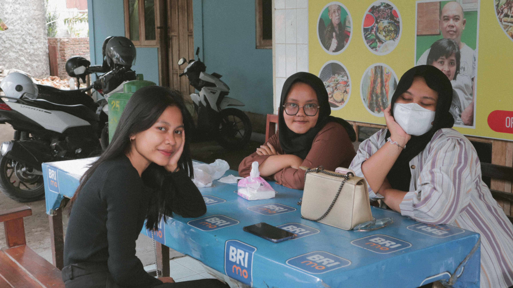
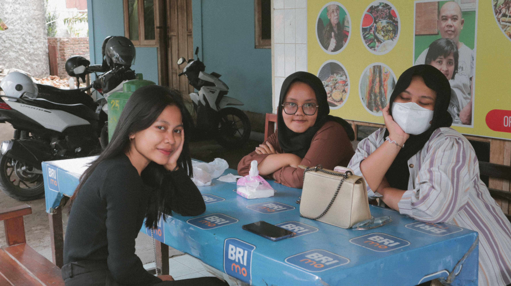

Kuliner merupakan segala sesuatu yang berhubungan dengan memasak.
Menurut Kamus Besar Bahasa Indonesia memasak sendiri adalah sebuah kata
kerja yang digunakan untuk mendeskripsikan suatu kegiatan mengolah bahan
makanan untuk akhirnya dapat dikonsumsi.
Dilain pihak kuliner tidak hanya sebuah aktifitas untuk membuat suatu
makanan yang dapat dikonsumsi.
Kuliner saat ini juga dapat dikatakan sebagai suatu gaya hidup, terlepas
dari fungsi utamanya untuk mengenyangkan kebutuhan pangan. Dari dahulu
hingga sekarang kuliner hal yang dinamis atau terus berkembang. Karena
kuliner adalah yang dapat dikembangkan dan tidak memiliki patokan
tertentu hingga hal ini mungkin terjadi. Seiring dengan majunya
peradaban kuliner juga berkembang bersamaan dengan itu.
Berawal dari satu bahan yang sama tetapi dapat menghasilkan
masakan
yang berbeda dengan bumbu yang berbeda dan cara mengolah yang
berbeda.
Menghasilkan cita rasa yang nikmat menjadi salah satu tujuan utama
masakan itu dibuat, namun tidak banyak masyarakat yang dapat
menghasilkan makanan dengan cita rasa demikian. Tetapi bagi mereka yang
dapat menghasilkan cita rasa makanan yang nikmat tidak jarang mereka
mengambil kesempatan untuk mengkomersilkan kuliner mereka
Wisata kuliner merupakan salah satu bagian dari sumber daya
budaya
masyarakat, salah satu wisata kuliner yang menarik peneliti adalah
mangut lele mbok Marto.
Olahan ikan lele dengan kuah santan yang berbumbu pedas jadi salah satu
sajian khas di daerah sekitar Yogyakarta. Gudeg yang merupakan sajian
pertama khas mbok yang terkenal sebelum mangut lelenya juga tidak kalah
enak dengan menu lain. Dengan pengolahan secara tradisional yang telah
dilakukan sejak awal,membuat warung mangut lele ini bisa
mempertahankan cita rasanya sejak
dulu.
Warung mangut lele mbok Marto terletak di Dusun Nggeneng, Desa
Panggungharjo, Kecamatan Sewon, Bantul. Meski letaknya tidak strategis
tetapi kelezatan mangut lelenya membuat orang kembali menyinggahi
warungnya.
Tujuan penelitian :
Pada penelitian ini tujuan yang diharapkan dapat dicapai adalah dapat
mendeskripsikan rumah makan mangut lele mbok Marto dalam mempertahankan
eksistensinya.
Metode penelitian :
-Wawancara
Wawancara merupakan proses pengumpulan data dengan melakukan tanya jawab
yang dilakukan secara langsung dengan narasumber untuk memperoleh
informasi secara detail dan lengkap. Penulis melakukan wawancara kepada
Ibu Ana Sri Handayani, menantu dari mbok Marto. Hasil wawancara yang
telah dilakukan, penulis memperoleh informasi mengenai rumah makan
mangut lele mbok Marto.
-Observasi
Observasi merupakan kegiatan pengamatan terhadap objek atau benda yang
sedang di teliti secara langsung. Observasi yang dilakukan penulis
adalah mendatangi langsung rumah makan mangut lele mbok Marto.
Observasi
bertujuan untuk mendapatkan alur proses memasak mangut lele mbok Marto.
Hasil dari temuan :
Seberapa pentingnya mangut lele ini untuk masyarakat sekitar?
Pentingnya usaha mangut lele mbok Marto bagi masyarakat sekitar yaitu
dapat membuka lapangan pekerjaan bagi warga di sekitar. Selain itu,
usaha mangut lele ini bisa menjadi motivasi Masyarakat untuk membangun
usaha nya sendiri Pengembangan mangut lele dari awal terbentuk Mbok
marto membuka usaha mangut lele dengan berkeliling sejak tahun 1960 an
ntuk menghidupi anak-anaknya. Tetapi seiring berjalannya waktu, mbok
marto berhenti berkeliling dan membuka usaha mangut lele dirumah sejak
tahun 1980 an. Mangut lele mbok marto yang awal mulanya terkenal dengan
gudeg nya kini menjajakan banyak menu salah satu yang terkenal adalah
mangut lele nya.
Dalam video dokumentasi ini, kami menghadirkan pengalaman autentik dan
menggiurkan seputar proses pembuatan Mangut Lele Mbok Marto di daerah
Sewon, Bantul, Daerah Istimewa Yogyakarta.Melalui kamera kami,
Anda akan diajak menelusuri kelezatan kuliner
khas yang satu ini, mulai dari persiapan bahan-bahan segar hingga
proses masak yang penuh dengan keahlian.
Mbok Marto, sebagai sosok yang mendalami seni memasak lele mangut,
berbagi rahasia dan tradisi kuliner yang telah diwariskan dari generasi
ke generasi. Video ini tidak hanya memanjakan mata dengan visual yang
menggiurkan, tetapi juga memberikan wawasan mendalam mengenai sejarah
dan keunikan dari Mangut Lele, sebuah hidangan yang merangkum cita rasa
khas DIY (Daerah Istimewa Yogyakarta). Selamat menikmati setiap momen di
balik layar yang menggugah selera ini!
NAMA : AULIA RUMI
NIM : 5230411022
TUGAS : coding website
NAMA : THUBAGUS MAULANA
NIM : 5230411020
TUGAS : coding website
NAMA : INTAN LIANA
NIM : 5230411030
TUGAS : desain tampilan
NAMA : NOVA RAHMAWATI
NIM : 5230411045
TUGAS : observasi lokasi
NAMA : ARETHA AGVIANA
NIM : 5230411034
TUGAS : dokumentasi foto
NAMA : FAREL BAGUS
NIM : 5190411188
TUGAS : finishing website
NAMA : JUHA MIKAEL
NIM : 5230411054
TUGAS : desain tampilan
NAMA : RAIHAN MUZAKKI
NIM : 5230411053
TUGAS : editing video dan tata letak shooting


 
